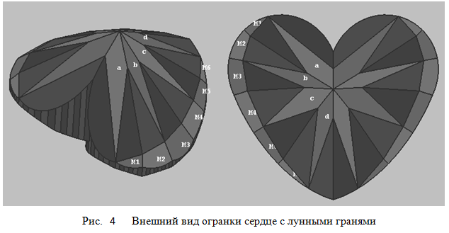

В данном разделе мы создадим модель огранки, которая носит название
сердце.
По ссылке Heart - Light Dispersion
можно увидеть многогранник отображенный при помощи кубических карт. При нажатии на приведенной по ссылке
странице кнопки Inverse многогранник отобразится на черном фоне.
Построение рундиста этой огранки сердце было подробно рассмотрено в предыдущей главе.
На рисунке 1 приведена нумерация вершин короны, а на рисунке 2 - павильона. При рассмотрении нумерации вершин павильона предполагаем, что наблюдатель находится внутри модели огранки и смотрит на павильон сверху. Заметим еще, что огранка спроектирована таким образом, при котором положение вершины 0 короны совпадает с положением вершины 0 рундиста.

var r = 0.06; // Толщина рундиста
var groove_pav = -0.016; // Позволяет измененять толщину рундиста в вырезе
// со стороны павильона (изменение глубины вершины g100).
// Следующие четыре парметра позволяют изменять толщину рундиста со
// стороны короны и павильона в некоторых узловых вершинах рундиста.
// Для того чтобы изменить значения этих параметров следует выбрать
// самый маленький размер шага изменения параметров.
var CrownPaint_1 = - 0.02; // Позволяет изменять высоту вершин g12 и g26
var CrownPaint_2 = - 0.035; // Позволяет изменять высоту вершин g38, g46 и g50
var PavPaint_1 = -0.011; // Позволяет изменять глубину вершин g12 и g18
var PavPaint_2 = -0.001; // Позволяет изменять глубину вершин g34 и g42
// Форма рундиста
var vp = 9.0*DEGREE; // Угол, определяющий степень отклонения
// кривой Ellipse_2 от окружности (см. парметры огранки груша)
var pearRt = 1.8; // Задает отношение длина/ширина для груши
var lambda = 21.5*DEGREE; // Задает угол наклона груши
var Lh = 0.289; // Отклонение смещения самого широкого места груши
// Корона
var crown_angle = 32*DEGREE; // Задает угол короны
var t = 0.58; // Ширина площадки (вдоль оси X)
var table_length = 0.68; // Позволяет изменять положение вершины 4 короны
// и тем самым изменяет длину площадки (вдоль оси Y)
var dSquare = 0.12; // Определяет положение средних вершин короны.
// Павильон
var pav_angle = 40*DEGREE; // Задает угол павильона
var hPavFacet = 0.75; // Задает глубину нижних вершин клиньев павильона
var culet = 0.04; // Определяет размер калетты огранки
var CuletX = 0.0; // Задает смещение калетты огранки вдль оси X
var CuletY = - 0.09; // Задает смещение калетты огранки вдль оси Y
var del_hPavFacet = 0.017; // Позволяет в небольших пределах изменять
// глубину вершины 0 павильона находящейся в глубине выреза
Поля groove_pav, CrownPaint_1, CrownPaint_2, PavPaint_1,
PavPaint_2 и del_hPavFacet,
хотя и входят в СДМ, но не включены в dat.GUI так как они не принципиально влияют на форму огранки.
Для модели, которую мы создаем, они имеют фиксированные значения. Однако, если требуется
точная настройка формы огранки, их всегда можно сделать растраиваемыми.
Построение рундиста подробно рассмотрено в предыдущей главе.
Внешний вид короны огранки сердце показан на рисунке 1. Из приведенного чертежа видно, что рисунок короны огранки сердце имеет сходство с ранее рассмотренными коронами огранок бриллиант, маркиз и груша, хотя количество главных граней короны огранки сердце и их расположение отличается от количества граней и их расположения упомянутых огранок. При построении короны огранки сердце используются различные методики. Например, можно построить корону, используя тот же прием, что использовался при построении огранки бриллиант. Однако, при таком подходе к созданию короны не удастся выполнить некоторые, часто предъявляемые к огранке, требования. Например, желательно построить корону таким образом, чтобы прямые образованные пересечением плоскостей, в которых лежат нижние клинья короны (на рисунке 1 это ребра 9-g26, 10-g38 и др.) подходили к линии рундиста под прямым углом. Также предпочтительно, чтобы главные грани короны A, B, C и D имели внешний вид, приближающийся к форме ромба.
Попытаемся построить корону таким образом, чтобы она по возможности удовлетворяла двум названным требованиям. Добавим к этим требованиям еще два специфических – вырез огранки всегда должен доходить до площадки и нижние клинья короны расположенные по обе стороны от выреза, должны располагаться в одной плоскости (один из двух клиньев – правый нижний клин короны обозначен как S).
Кроме того, почти всегда неявно подразумевается, что для всех типов огранок средние вершины короны – 8, 9, 10, 11, 12, 13, 14 и 15 должны располагаться на одной высоте. Условие перпендикулярности рундисту прямых, по которым пересекаются нижние клинья короны, и условие наличия одной и той же высоты всех средних вершин короны накладывает достаточно жесткие условия на построение плоскостей, в которых лежат главные грани короны A, B, C и D. Несмотря на вышесказанное, чтобы внешний вид короны стал более привлекательным, частично отступим от стандартного требования ко всем огранкам – одинаковости высоты, на которой расположены все средние вершины короны. Это отступление будет заключаться в том, что высота вершин 11 и 12 короны не обязательно должна находиться на уровне других средних вершин короны (8, 9, 10, 13, 14, 15) и при выборе внешнего вида короны изменялась бы в зависимости от значений других параметров определяющих форму короны. Но все остальные (8, 9, 10, 13, 14, 15) средние вершины короны должны иметь одинаковую высоту.

Предположим, что при построении короны мы отказались от требования, чтобы ее средние вершины 8, 9 и 10 должны быть расположены на одной и той же высоте и каким-то способом предварительно определили положение плоскостей граней B и C. В этом случае координаты, например, вершины 10 короны, определяются как координаты точки пересечения плоскостей B, C и вертикальной плоскости, проходящей через вершину рундиста 38, и расположенную перпендикулярно к рундисту. На рисунке 3 показан вид короны построенной таким образом огранки. Из него видно, что в этом случае положение этих вершины начинает гулять в горизонтальной плоскости, и в результате, например грань B короны принимает совершенно не приемлемую, с точки зрения внешнего вида короны, форму.
Определение положения вершин короны показано на следующем листинге:
var X1 = new Vector3D(1, 0, 0);
var Y1 = new Vector3D(0, 1, 0);
var Z1 = new Vector3D(0, 0, 1);
var i;
InitGirdle();
// pt_Ymax - точка на рундисте имеющая максимальное значение координаты Y
var upPoint = new Point3D(0.0, (girdle[50][1] + pt_Ymax[1]) / 2.0,
r/2 + 0.5 * Math.tan(crown_angle));
var dir1 = new Vector3D(girdle[18][0] - upPoint[0],
girdle[18][1] - upPoint[1],
girdle[18][2] - upPoint[2]);
crown[1] = new Point3D(upPoint[0] + t * dir1[0],
upPoint[1] + t * dir1[1],
upPoint[2] + t * dir1[2]);
// Особым способом находим координаты вершины crown[0]
crown[0] = new Point3D(0.0, girdle[0][1], crown[1][2]);
// Несуществующая точка на рундисте
var gd_0_Virtual = new Point3D(0, upPoint[1] + (crown[0][1] - upPoint[1])/t, r/2);
if (gd_0_Virtual[1] < pt_Ymax[1])
{
gd_0_Virtual[1] = pt_Ymax[1];
}
// Касательные к точкам на рундисте gd_0_Virtual и 18
var line_0 = new Line2D(new Point2D(gd_0_Virtual[0], gd_0_Virtual[1]),
new Point2D(gd_0_Virtual[0] + 1.0, gd_0_Virtual[1]));
var dir_2 = new Vector2D(girdle[18+1][0] - girdle[18-1][0],
girdle[18+1][1] - girdle[18-1][1]);
var line_1 = new Line2D();
line_1.CreateLineVectorPoint(dir_2, new Point2D(girdle[18][0], girdle[18][1]));
var ptCross = line_0.IntersectionTwoLines(line_1);
// точки звезды пропорциональны этим точкам относительно upPoint
var m = (1 + SQRT2) / 2 * t;
if ( dSquare <= 0 )
m = m + dSquare * (m - 1 + t);
else
m = m + dSquare * (1 - m);
// Пока требуется найти положение только вершины 8 короны
var dir = new Vector3D(ptCross[0] - upPoint[0], ptCross[1] - upPoint[1], r/2 - upPoint[2]);
crown[8] = new Point3D(upPoint[0] + m * dir[0], upPoint[1] + m * dir[1], upPoint[2] + m * dir[2]);
// Вектора идущие вдоль линий касательных к рундисту
// в его вершинах 26, 38, 46
var vec_26 = new Vector3D(girdle[25][0] - girdle[27][0], girdle[25][1] - girdle[27][1], 0);
vec_26.Normer();
var vec_38 = new Vector3D(girdle[37][0] - girdle[39][0], girdle[37][1] - girdle[39][1], 0);
vec_38.Normer();
var vec_46 = new Vector3D(girdle[45][0] - girdle[47][0], girdle[45][1] - girdle[47][1], 0);
vec_46.Normer();
var pl_26 = new Plane3D();
pl_26.CreatePlaneNormalVectorPoint(vec_26, girdle[26]);
var pl_38 = new Plane3D();
pl_38.CreatePlaneNormalVectorPoint(vec_38, girdle[38]);
var pl_46 = new Plane3D();
pl_46.CreatePlaneNormalVectorPoint(vec_46, girdle[46]);
var table = new Plane3D();
table.CreatePlaneNormalDistOXYZ(Z1, crown[1][2]);
var pl_mid = new Plane3D();
pl_mid.CreatePlaneNormalDistOXYZ(Z1, crown[8][2]);
// грань A
var A = new Plane3D();
A.CreatePlaneThreePoints(crown[1], crown[8], girdle[18]);
crown[9] = pl_mid.IntersectionThreePlanes(pl_26, A);
// Корректировка положения вершин короны 1
var pt_A = new Point3D((crown[8][0] + crown[9][0])/2.0,
(crown[8][1] + crown[9][1])/2.0, 1.0);
// Находим уравнение вертикальной плоскости проходящей через точку pt_A
var dir_8_9 = new Vector3D (crown[8][0] - crown[9][0],
crown[8][1] - crown[9][1], 0.0);
dir_8_9.Normer();
var pl_Vert_A = new Plane3D();
pl_Vert_A.CreatePlaneNormalVectorPoint(dir_8_9, pt_A);
// Находим положение вершины короны 1
crown[1] = table.IntersectionThreePlanes(pl_Vert_A, A);
// грань B
var B = new Plane3D();
B.CreatePlaneThreePoints(crown[9], girdle[26], girdle[38]);
// Находим положение вершины короны 10
crown[10] = pl_mid.IntersectionThreePlanes(pl_38, B);
// Корректировка положения вершин короны 2
var pt_B = new Point3D((crown[9][0] + crown[10][0])/2.0,
(crown[9][1] + crown[10][1])/2.0, 1.0);
var dir_9_10 = new Vector3D(crown[9][0] - crown[10][0],
crown[9][1] - crown[10][1], 0.0);
var pl_Vert_B = new Plane3D();
pl_Vert_B.CreatePlaneNormalVectorPoint(dir_9_10, pt_B);
crown[2] = table.IntersectionThreePlanes(pl_Vert_B, B);
// грань D
// Величина table_length задает значение координаты OY вершины короны 4.
// Введение параметра table_length позволяет изменять форму и размер грани D.
// Плоскость, в которой лежит грань D, имеет наклон только относительно прямой,
// проходящей параллельно координатной оси OY. Поэтому, с учетом этого факта,
// при известных значениях координат вершины короны 4 и вершины рундиста, можно легко найти уравнение плоскости,
// в которой лежит грань D. Пересечение этой плоскости с плоскостью, в которой лежит грань C,
// и вертикальной плоскостью, проходящей перпендикулярно рундисту в его вершине g46,
// определяет положение вершины 11 короны.
// Подчеркнем тот факт, что положение этой вершины 11 находится иначе, чем положение вершин короны 9 и 10.
girdle[50][2] = girdle[18][2] + CrownPaint_2;
var pt1 = new Point3D(0.0, -table_length * t, crown[0][2]);
var pt2 = new Point3D(1.0, -table_length * t, crown[0][2]);
crown[4] = pt1;
var D = new Plane3D();
D.CreatePlaneThreePoints(girdle[50], pt1, pt2);
// грань C
var C = new Plane3D();
C.CreatePlaneThreePoints(crown[10], girdle[38], girdle[46]);
// Находим положение вершины короны 11
// (!)Высота вершины 11 не совпадает с высотой вершины 10 короны.
crown[11] = D.IntersectionThreePlanes(pl_46, C);
// Корректировка положения вершин короны 3
var pt_C = new Point3D((crown[10][0] + crown[11][0])/2.0,
(crown[10][1] + crown[11][1])/2.0, 1.0);
var dir_10_11 = new Vector3D(crown[10][0] - crown[11][0],
crown[10][1] - crown[11][1], 0.0);
var pl_Vert_C = new Plane3D();
pl_Vert_C.CreatePlaneNormalVectorPoint(dir_10_11, pt_C);
crown[3] = table.IntersectionThreePlanes(pl_Vert_C, C);
// Из условия симметрии короны
crown[12] = new Point3D(- crown[11][0], crown[11][1], crown[11][2]);
crown[5] = new Point3D(- crown[3][0], crown[3][1], crown[3][2]);
crown[6] = new Point3D(- crown[2][0], crown[2][1], crown[2][2]);
crown[7] = new Point3D(- crown[1][0], crown[1][1], crown[1][2]);
crown[13] = new Point3D(- crown[10][0], crown[10][1], crown[10][2]);
crown[14] = new Point3D(- crown[9][0], crown[9][1], crown[9][2]);
crown[15] = new Point3D(- crown[8][0], crown[8][1], crown[8][2]);
// Вершина 0 рундиста одновременно является и вершиной 0 короны,
// вследствие того, что вырез огранки всегда достигает площадки.
// Уравнение плоскости грани S будем определять исходя из следующих трех условий.
// Первое условие заключается в том, что грань проходит через вершину 8 короны.
// Второе условие - то, что грань S и симметричная ей относительно плоскости OYZ грань, лежат в одной плоскости
// и, следовательно, имеют одинаковый азимут. Так принято делать во всех огранках типа сердце.
// Третье условие заключается в том, что наклон грани S определяется углом определяемым следующим образом
// ang = atan (crown[1][2]- crown[8][2])/(crown[8][1]- girdle[0][1])
// Выполнение этих условий позволяет найти уравнение плоскости, в которой лежит грань S.
// Уравнение грани S требуется для нахождения высот вершин рундиста 1 – 6.
// Вершина g0 расположена на уровне высоты площадки. При принятом способе построения короны существует
// возможность регулировки в небольших пределах толщины рундиста.
// С этой целью в состав СДМ введены поля CrownPaint_1 и CrownPaint_2 которые позволяют регулировать
// толщину рундиста со стороны короны в его узловых вершинах 12, 26, 38 и 46.
// Если потребуется ввести соответствующие параметры в dat.GUI, то следует выбрать самый маленький шаг изменения
// этих параметров в программе визуализации огранки.
// Вычисление угла наклона грани S и симметричной ей грани относительно оси OY в вырезе сердца.
// У этих плоскостей азимуты одинаковы и равны 90 градусам.
var vec_01 = new Vector2D(0.0, 1.0);
var ang = Math.atan2(crown[1][2] - crown[8][2],
crown[8][1] - girdle[0][1]);
var normPlaneVector = new Vector3D(Math.sin(ang) * vec_01[0], Math.sin(ang) * vec_01[1], Math.cos(ang));
normPlaneVector.Normer();
// грань S
var S = new Plane3D();
S.CreatePlaneNormalVectorPoint(normPlaneVector, crown[8]);
girdle[0][0] = crown[0][0]; // Вершины girdle[0] и crown[0] имеют одно и то же положение.
girdle[0][1] = crown[0][1];
girdle[0][2] = crown[0][2];
// Коррекции вершин рундиста 1 - 6
for(i = 1; i < 7; i++)
{
var vertLine = new Line3D();
vertLine.CreateLineVectorPoint(Z1, girdle[i]);
girdle[i] = vertLine.IntersectionLinePlane(S);
}
// Высоту вершин рундиста 34 и 42 требуется рассчитать
var vertLine_1 = new Line3D(girdle[34], girdle[34+100]);
girdle[34] = vertLine_1.IntersectionLinePlane(B);
vertLine_2 = new Line3D(girdle[42], girdle[42+100]);
girdle[42] = vertLine_2.IntersectionLinePlane(C);
// Высоты вершин рундиста 12, 26, 38 и 46 можно задавать
girdle[12][2] = girdle[12][2] + CrownPaint_1;
girdle[26][2] = girdle[26][2] + CrownPaint_1;
girdle[38][2] = girdle[38][2] + CrownPaint_2;
girdle[46][2] = girdle[46][2] + CrownPaint_2;
Correction_girdle_crown(6, 6, 12, 8)
Correction_girdle_crown(6, 12, 18, 8)
Correction_girdle_crown(8, 18, 26, 9)
Correction_girdle_crown(8, 26, 34, 9)
Correction_girdle_crown(4, 34, 38, 10)
Correction_girdle_crown(4, 38, 42, 10)
Correction_girdle_crown(4, 42, 46, 11)
Correction_girdle_crown(4, 46, 50, 11)
.........
function Correction_girdle_crown(n, gd1, gd2, cr)
{
var i;
var crownPlane = new Plane3D();
crownPlane.CreatePlaneThreePoints(girdle[(gd1)],girdle[(gd2)],crown[(cr)]);
for(i = 1; i < n; i++)
{
var vert_line = new Line3D(girdle[i+(gd1)], girdle[100+i+(gd1)]);
girdle[i+gd1] = vert_line.IntersectionLinePlane(crownPlane);
}
}
Методика построения формы павильона огранки зависит от его вида. В рассматриваемой огранке главные грани павильона имеют WBT-расположение. Если главные грани павильона расположены по-другому (или их количество отличается от того числа граней, которое имеют рассмотренные выше огранки сердце), методика построения павильона может быть выбрана совершенно другой.
// При принятом способе построения павильона существует возможность регулировки в небольших пределах толщины рундиста.
// С этой целью в состав СДМ огранки введены поля PavPaint_1 и PavPaint_2. Они позволяют регулировать толщину рундиста
// со стороны павильона в его узловых вершинах 112, 118, 134, 142. Если потребуется ввести соответствующие параметры
// в dat.GUI, то следует выбрать самый маленький шаг изменения этих параметров в программе визуализации огранки.
girdle[12+100][2] = girdle[12+100][2] - PavPaint_1;
girdle[18+100][2] = girdle[18+100][2] - PavPaint_1;
girdle[34+100][2] = girdle[34+100][2] - PavPaint_2;
girdle[42+100][2] = girdle[42+100][2] - PavPaint_2;
girdle[88+100][2] = girdle[88+100][2] - PavPaint_1;
girdle[82+100][2] = girdle[82+100][2] - PavPaint_1;
girdle[66+100][2] = girdle[66+100][2] - PavPaint_2;
girdle[58+100][2] = girdle[58+100][2] - PavPaint_2;
// Построение павильона начнем с проведения касательных к линии рундиста в его вершинах 112, 126, 138, 146, 154, 162, 174 и 188.
// Используя заданное значение угла павильона (pav_angle), и параметры, задающие положение виртуального шипа павильона
// (CuletX и CuletY), определим точку пересечения плоскостей, в которых расположены главные четырехугольные грани павильона.
// Соединив точки пересечения касательных к рундисту с точкой пересечения главных граней павильона, мы найдем положение прямых,
// по которым пересекаются плоскости главных граней павильона.
// Значение параметра hPavFacet задает на этих прямых положение нижних вершин клиньев павильона – его вершины 1 – 7,
// а значение параметра Culet – вершин павильона 9 – 15. Рассмотренный способ расчета координат вершин павильона совпадает
// с тем способом, который использовался для расчета вершин бриллианта.
var kollet = new Point3D(CuletX, CuletY, - Math.tan(pav_angle)/2 - r/2);
var hp = Math.tan(pav_angle)/2;
// Восемь касательных прямых к рундисту в его вершинах 12, 26, 38, 46, 54, 62, 74, 88
// 0
var dir_ln_0 = new Vector2D(girdle[12+1][0] - girdle[12-1][0], girdle[12+1][1] - girdle[12-1][1]);
dir_ln_0.Normer();
var ln_0 = new Line2D();
ln_0.CreateLineVectorPoint(dir_ln_0, new Point2D(girdle[12][0], girdle[12][1]) );
// 1
var dir_ln_1 = new Vector2D(girdle[26+1][0] - girdle[26-1][0], girdle[26+1][1] - girdle[26-1][1]);
dir_ln_1.Normer();
var ln_1 = new Line2D();
ln_1.CreateLineVectorPoint(dir_ln_1, new Point2D(girdle[26][0], girdle[26][1]) );
..................................................................................
// 7
var dir_ln_7 = new Vector2D(girdle[88+1][0] - girdle[88-1][0], girdle[88+1][1] - girdle[88-1][1]);
dir_ln_7.Normer();
var ln_7 = new Line2D();
ln_7.CreateLineVectorPoint(dir_ln_7, new Point2D(girdle[88][0], girdle[88][1]) );
var point = [8]; // Точки пересечения касательных прямых
point[0] = ln_7.IntersectionTwoLines(ln_0);
point[1] = ln_0.IntersectionTwoLines(ln_1);
point[2] = ln_1.IntersectionTwoLines(ln_2);
point[3] = ln_2.IntersectionTwoLines(ln_3);
point[4] = ln_3.IntersectionTwoLines(ln_4);
point[5] = ln_4.IntersectionTwoLines(ln_5);
point[6] = ln_5.IntersectionTwoLines(ln_6);
point[7] = ln_6.IntersectionTwoLines(ln_7);
var dir_p = [];
// Вычисление координат вершин павильона
for (i = 1; i < 8; i++)
{
dir_p[i] = new Vector3D(kollet[0] - point[i][0],
kollet[1] - point[i][1],
kollet[2] + r/2);
pavil[i] = new Point3D( kollet[0] - dir_p[i][0] * (1 - hPavFacet),
kollet[1] - dir_p[i][1] * (1 - hPavFacet),
kollet[2] - dir_p[i][2] * (1 - hPavFacet) );
pavil[8+i] = new Point3D( kollet[0] - culet * dir_p[i][0],
kollet[1] - culet * dir_p[i][1],
kollet[2] - culet * dir_p[i][2] );
}
// Хотя рундист сердца не является выпуклым в месте расположения выреза, вся остальная часть огранки
// должна обязательно оставаться выпуклой. Поэтому для нахождения положения вершин павильона 0 и 8,
// лежащих в глубине выреза огранки проведем горизонтальные плоскости на уровне нижних вершин клиньев
// павильона и на уровне калетты огранки. Затем определим уравнения плоскостей граней a и h павильона
// и найдем координаты вершин 0 и 8 как точки пересечения трех соответствующих плоскостей.
// Находим уравнение плоскостей павильона a и h
var pl_a = new Plane3D();
pl_a.CreatePlaneThreePoints(kollet, pavil[1], girdle[12+100]);
var pl_h = new Plane3D();
pl_h.CreatePlaneThreePoints(kollet, pavil[7], girdle[88+100]);
// Плоскость pl_PavFacet на уровне которой лежит вершина павильона 0
var pl_PavFacet = new Plane3D();
pl_PavFacet.CreatePlaneNormalDistOXYZ(Z1, -r/2 - hp * (hPavFacet + del_hPavFacet));
// Находим вершину павильона 0
pavil[0] = pl_PavFacet.IntersectionThreePlanes(pl_a, pl_h);
// Плоскость pl_culet на уровне которой лежат вершины павильона (калетты) 8 - 15
var pl_culet = new Plane3D();
pl_culet.CreatePlaneNormalDistOXYZ(Z1, pavil[10][2]);
// Находим вершину павильона (калетты) 8
pavil[8] = pl_culet.IntersectionThreePlanes(pl_a, pl_h);
// Остается еще найти координату по оси OZ вершины рундиста 100 лежащей в глубине выреза.
// Можно, конечно, ввести параметр огранки, при помощи которого можно будет напрямую задавать
// значение глубины выреза для этой вершины рундиста, однако, лучше каким-то образом привязать значение глубины
// этой вершины к форме рундиста и павильона. Поэтому, для нахождения координаты z вершины рундиста 100,
// создадим специальную плоскость, проходящую через вершины рундиста 106 и 194, а также вершину павильона 0.
// Тогда пересечение вертикальной прямой, проведенной через вершину рундиста 0,
// с этой плоскостью, определит координату z вершины рундиста 100.
// Для того чтобы все-таки оставить за пользователем огранки возможность менять в небольших пределах найденное
// автоматически значение координаты z этой вершины рундиста, в СДО введено поле groove_pav.
// Еще одно поле в СДМ del_hPavFacet позволяет в очень небольших пределах изменять глубину вершины павильона 0.
// Этот параметр имеет в СДО принадлежащее ему поле del_hPavFacet. В рассматриваемой программе поля
// groove_pav и del_hPavFacet не имеют своего отображения в dat.GUI.
// Находим вершину 100 рундиста
var p0_g106_g194 = new Plane3D(); // особым способом определенная плоскость
p0_g106_g194.CreatePlaneThreePoints(pavil[0], girdle[106], girdle[194]);
var line_g0_g100 = new Line3D(girdle[0], girdle[100]);
girdle[100] = line_g0_g100.IntersectionLinePlane(p0_g106_g194);
// Корректировка вершины 100 рундиста
girdle[100][2] = girdle[100][2] + groove_pav;
// Коррекция вершин рундиста со стороны павильона.
Correction_girdle_pavilion(12, 100+0, 100+12, 0)
Correction_girdle_pavilion(6, 100+12, 100+18, 1)
Correction_girdle_pavilion(8, 100+18, 100+26, 1)
Correction_girdle_pavilion(8, 100+26, 100+34, 2)
Correction_girdle_pavilion(4, 100+34, 100+38, 2)
Correction_girdle_pavilion(4, 100+38, 100+42, 3)
Correction_girdle_pavilion(4, 100+42, 100+46, 3)
Correction_girdle_pavilion(4, 100+46, 100+50, 4)
// x < 0
Correction_girdle_pavilion(4, 100+50, 100+54, 4)
Correction_girdle_pavilion(4, 100+54, 100+58, 5)
Correction_girdle_pavilion(4, 100+58, 100+62, 5)
Correction_girdle_pavilion(4, 100+62, 100+66, 6)
Correction_girdle_pavilion(8, 100+66, 100+74, 6)
Correction_girdle_pavilion(8, 100+74, 100+82, 7)
Correction_girdle_pavilion(6, 100+82, 100+88, 7)
Correction_girdle_pavilion(12, 100+88, 100+0, 0)
................................................
// Функция осуществляющая корректировку координаты z вершин рундиста со стороны павильона.
function Correction_girdle_pavilion(n, gd1, gd2, pav)
{
var i;
var pavPlane = new Plane3D();
pavPlane.CreatePlaneThreePoints(girdle[(gd1)], girdle[(gd2)], pavil[(pav)]);
for(i = 1; i < n; i++)
{
var vert_line = new Line3D(girdle[i+(gd1)], girdle[i+(gd1) - 100]);
girdle[i+gd1] = vert_line.IntersectionLinePlane(pavPlane);
}
}
У огранок сердце, также как и у огранок маркиз и груша, может присутствовать примыкающий к рундисту пояс лунных граней (moon facets). На рисунке 4 показан внешний вид павильона одного из возможных вариантов огранки сердце с лунными гранями.

В качестве рундиста и короны огранки многогранника с лунными гранями берутся соответствующие части
ранее рассмотренной огранки сердце без лунных граней. Также как и в предыдущих рассмотренных нами огранок
с лунными гранями положение этих граней задается двумя параметрами, чьи поля в СДМ носят названия
MoonRotateAngle и MoonFacetAngle. Значение первого из этих параметров задает угол наклона
плоскости planePitch (смотри главу 16 в которой рассматривается создание огранки маркиз с лунными гранями),
а значение второго параметра задает угол наклона непосредственно лунных граней.
Для огранки сердце с лунными гранями плоскость planePitch проходит через вершины рундиста 112 и 146.
Прямая, которая соединяет эти две вершины рундиста, является осью вращения для плоскости planePitch.
В остальном создание пояса лунных граней огранки сердце совпадает с построением лунных граней огранок маркиз и груша.